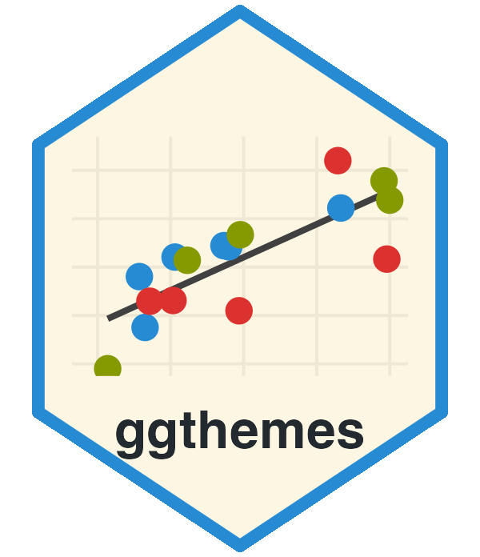
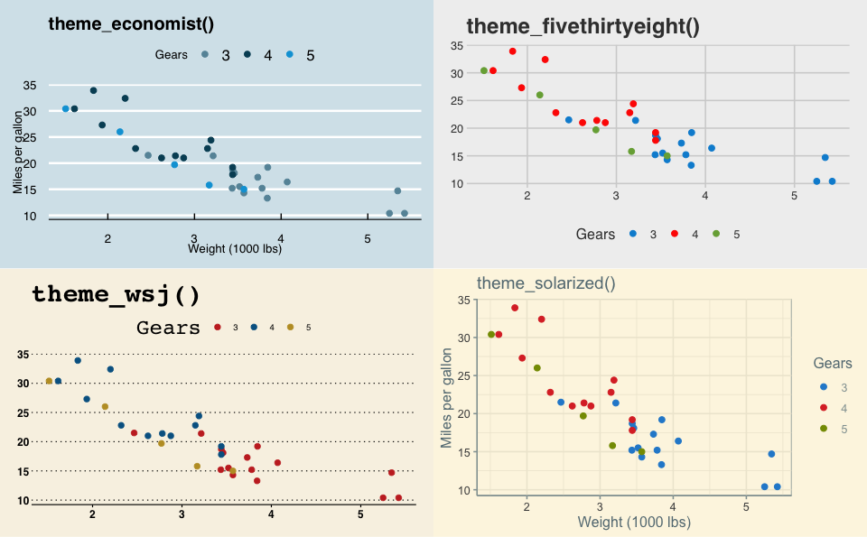
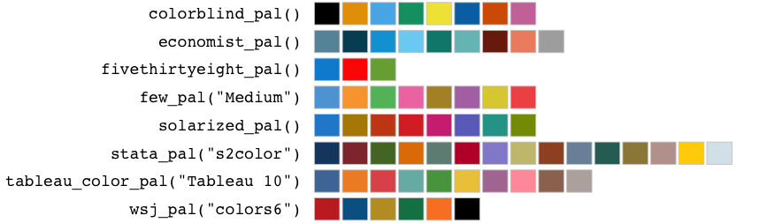
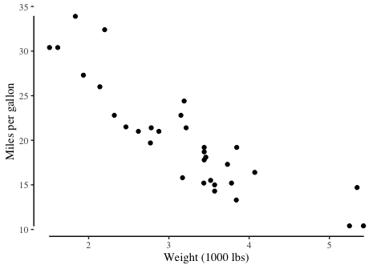
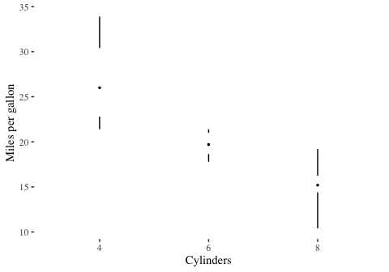

ggthemes 


ggthemes adds themes, scales and geoms to ggplot2 that reproduce the look of well-known publications and software, and of the graphics advocated by Edward Tufte and Stephen Few:
- Themes after The Economist, The Wall Street Journal, FiveThirtyEight, Excel, LibreOffice Calc, Google Docs, Highcharts, Apple Numbers, Stata, Solarized, base R graphics and more.
- Color, shape and linetype scales and palettes to match, including colorblind-safe and Tableau palettes. See the palette gallery.
- Geoms for Tufte’s range frames and minimal box plots, and tools for banking to 45° to choose a plot’s aspect ratio.

Installation
Install the released version from CRAN:
install.packages("ggthemes")Or the development version from GitHub:
# install.packages("pak")
pak::pak("jrnold/ggthemes")Themes
Every theme is shown below with its matching color scale, where it has one. Each figure links to the theme’s reference page.
Data and base plots used in the examples
library("ggplot2")
library("ggthemes")
mtcars2 <- within(mtcars, {
vs <- factor(vs, labels = c("V-shaped", "Straight"))
am <- factor(am, labels = c("Automatic", "Manual"))
cyl <- factor(cyl)
gear <- factor(gear)
})
p1 <- ggplot(mtcars2) +
geom_point(aes(x = wt, y = mpg, colour = gear)) +
labs(
title = "Fuel economy falls with weight",
x = "Weight (1000 lbs)",
y = "Fuel economy (mpg)",
colour = "Gears"
)
# `theme_map()` intentionally removes axes, so use geographic data rather than
# a scatterplot. `theme_solid()` is likewise intended to leave only geoms.
us_states <- map_data("state")
p_map <- ggplot(us_states, aes(long, lat, group = group)) +
geom_polygon(aes(fill = region), colour = "white", linewidth = 0.15) +
coord_map("albers", lat0 = 39, lat1 = 45) +
guides(fill = "none")
p_solid <- ggplot(mtcars2) +
geom_point(aes(x = wt, y = mpg, colour = gear), size = 3) +
guides(colour = "none")
|
|
|
|
|
|
|
|
|
|
|
|
|
|
|
|
|
|
|
|
|
|
Color palettes
A sample of the color palettes is shown below. The palette gallery shows every palette in the package.

Geoms
geom_rangeframe() draws Tufte’s range frame, axis lines that span only the range of the data. geom_tufteboxplot() draws his minimal box plot.
ggplot(mtcars, aes(wt, mpg)) +
geom_point() +
geom_rangeframe() +
coord_cartesian(clip = "off") +
labs(x = "Weight (1000 lbs)", y = "Miles per gallon") +
theme_tufte()
ggplot(mtcars, aes(factor(cyl), mpg)) +
geom_tufteboxplot() +
labs(x = "Cylinders", y = "Miles per gallon") +
theme_tufte()

Learn more
- The reference pages document every theme, scale, palette and geom, with examples.
- The palette gallery shows every color palette.
- For a tutorial that uses ggthemes, see the add-on packages section of Rafael Irizarry’s Introduction to Data Science.